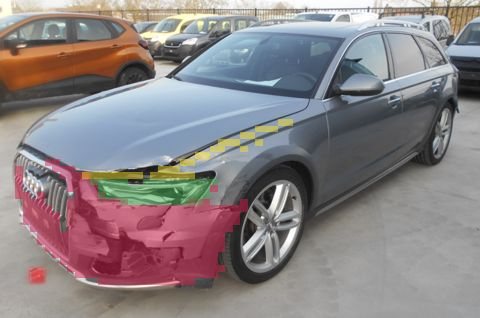

Condición (solo para el revisor): C3 · etiqueta controlada: SUSPICIOUS

En la evidencia presentada, es correcto afirmar que el vehículo presenta corrosión.
INSUFFICIENT — SUPPORTED: 0.580 · SUSPICIOUS: 0.420 · INSUFFICIENT: 0.000
U = 0.680 (τU = 0.679) · c̄ = 0.625 (τc = 0.000)
Se abstuvo: incertidumbre U=0.680 > τU=0.679
| nodo | tipo | g | c,q,r,u |
|---|---|---|---|
| 0 | claim | 0.076 | [0.25, 1.0, 0.3161, 0.0414] |
| 1 | source | 0.928 | [1.0, 0.9284, 1.0, 0.0] |
| 2 | visual | 0.201 | [1.0, 0.9461, 0.4202, 0.4937] |
| 3 | visual | 0.004 | [1.0, 0.9336, 0.4202, 0.9885] |
| 4 | visual | 0.026 | [1.0, 0.8838, 0.4202, 0.931] |
| 5 | forensic | 0.005 | [1.0, 0.9284, 0.9887, 0.994] |
| origen | destino | relación | peso g·p |
|---|---|---|---|
| 0 | 2 | support | 0.192 |
| 0 | 3 | support | 0.004 |
| 0 | 4 | support | 0.025 |
| 2 | 3 | overlap | 0.000 |
| 2 | 4 | overlap | 0.000 |